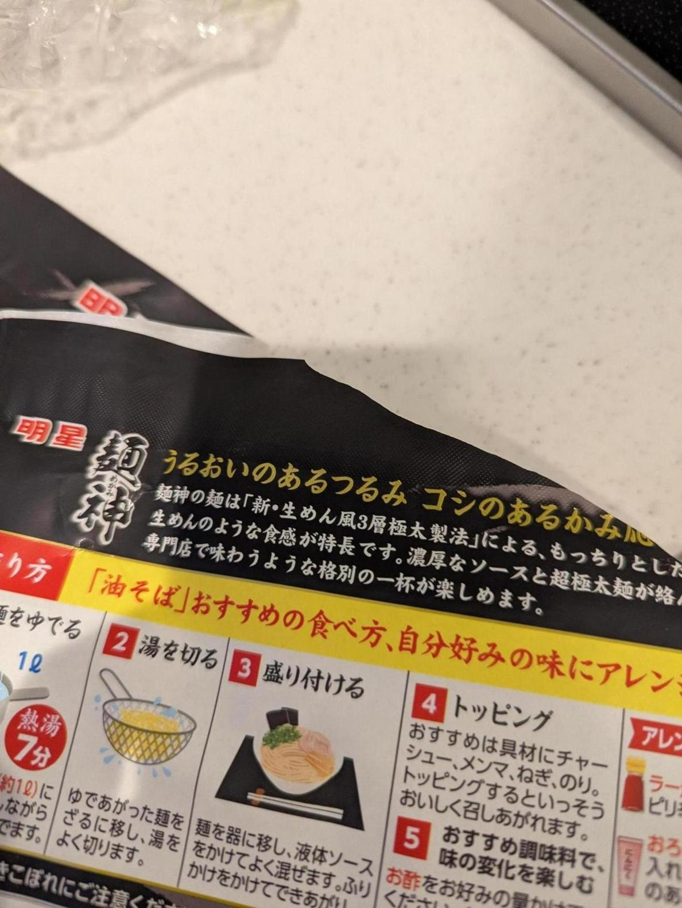

<- 日記
実は今車を車検に出している。タイヤを2本交換しないと車検通せないというのと、ブレーキパッドの交換タイミングが重なったのでだいぶ高くなってしまった。
高いのはまあ仕方ないから良いんだけど、5日もかかる上に代車がないとのことで、今妻の車でないとどこにも行けなくて困っている。次回からここに車検は頼まないかな、、という感じがある。というか見積もりだけ取って辞めればよかったな。
今日はファスティングしてないので昼に麺神の油そば食べた。「つるみ」とかいうわけのわからない言葉を見た。
